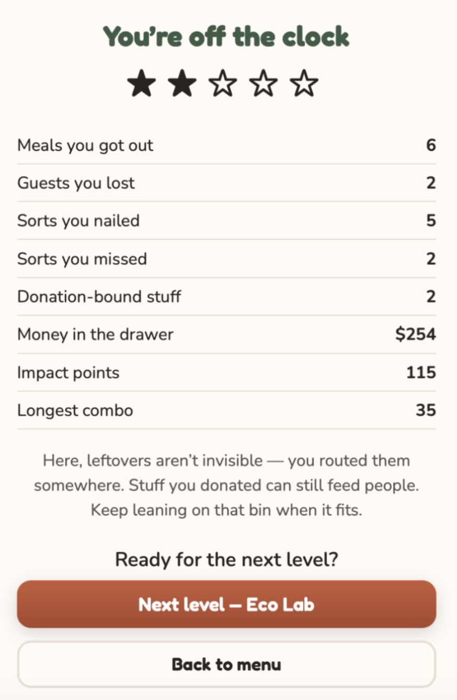

Defined the two-phase restaurant and recovery system.
Interactive thesis prototype
Cycora
A two-phase educational typing game about restaurant service, leftover sorting, and food recovery decisions.

My Role + Duration
Thesis design, UX/UI, game systems, and prototype documentation
Thesis development, 2026.
Designed prompts, HUD logic, recovery choices, and results feedback.
Built and documented the working browser prototype.
Ongoing work with structured playtesting planned.
Project Overview
A food-recovery learning game
Cycora turns a restaurant shift into a learning system where players first serve customers under time pressure and then sort leftovers into recovery channels.
The product is a two-phase 2D typing game. In phase one, players read prompts, prepare orders, move through kitchen stations, and serve meals. In phase two, they slow down and decide whether leftover food or packaging belongs in donation, compost, recycling, or trash.
The project focuses on how younger players understand that leftovers are not interchangeable. The game connects speed, labor, waste, and recovery so the player can see how different choices produce different outcomes.
Typing was selected because it keeps the controls simple while still connecting reading, decision-making, and action.
Problem + Goals
Connecting service pressure with recovery responsibility
The design challenge is to teach food recovery as a sequence of concrete choices rather than a distant statistic.
Abstract food waste
Younger players may understand that waste is harmful without knowing how donation, compost, recycling, and trash differ in practice.
Teach categories
Help players identify the correct recovery destination for different leftovers.
Make consequences visible
Use results feedback to show how sorting choices change impact.
Keep controls readable
Use typing prompts and clear UI hierarchy so players can act without complex instructions.
Research Plan
Methods, questions, and evidence summary
The current research plan combines research-through-design, prototype testing, and player comprehension review.
Planned and used methods
Research-through-design, gameplay prototyping, food-system mapping, interface iteration, and structured playtest observation.
Research questions
Can players explain recovery categories after play? Where do they hesitate? Does service pressure distract from the learning objective? Does the results screen clarify consequences?
Measures to track
Completion rate, typing errors, correct sorts, missed sorts, donation items, guests lost, and before-after understanding scores.
Observed themes
Early review suggests the two-phase structure helps separate urgency from reflection, but recovery prompts must be highly readable.
Findings
Learning depends on pacing, category clarity, and feedback
Findings are based on prototype review and the planned testing criteria for the next phase.
Representative comments
"I understand the rush of service, but cleanup needs more thinking time." "The result screen helps me see what I missed." "I need hints for items that look similar."
Current friction
Players may rush recovery choices, confuse categories, or miss why a result changed if feedback is too brief.
Player experience
Urgency, responsibility, uncertainty, satisfaction after correct sorting, and concern when waste is routed poorly.
Useful tension
The service phase can create urgency, but the recovery phase needs enough calm for reasoning.
Personas + Empathy Map
Younger learners and reflective players
The main user groups need approachable prompts, visible feedback, and a learning loop that does not feel punitive.
Enjoys the typing challenge and needs clear prompts to avoid frustration.
Wants to understand why a leftover belongs in one recovery channel rather than another.
The player needs category hints at the moment of decision.
The strongest learning comes when pressure is followed by understandable feedback.
Insights & Opportunities
Design directions for the next build
The prototype suggests several ways to strengthen comprehension and replay value.
Separate pace modes
Fast service and slower recovery support different learning states.
Make categories teachable
Donation, compost, recycling, and trash need visible rules and examples.
Results matter
The results screen is where the learning objective becomes measurable.
Improve hints
Use short item-specific hints before players sort ambiguous leftovers.
Proposed Solutions
Game flow, interface evidence, and next design changes
The proposed flow keeps the service challenge but gives recovery decisions clearer teaching support.
Brief user flow: take orders -> serve meals -> transition to cleanup -> sort leftovers -> review service and recovery results.
Take Orders
Players type active table prompts so dishes enter the kitchen queue.
Serve Meals
Players complete kitchen station steps before customer patience runs out.
Sort Recovery
Players route leftovers to donation, compost, recycling, or trash with clearer hints.
Review Results
The game summarizes service performance and recovery accuracy.
Prototype evidence
Gameplay in motion
The animated gameplay shows prompts, station movement, dialogue, HUD feedback, and the transition between service and recovery logic.

Results screen
Outcome feedback
The end state combines meals served, guests lost, correct sorts, donation-bound items, impact, combo, and star rating.

Reflection + Lessons Learned
What Cycora has taught me so far
The project is strongest when research, gameplay structure, interface feedback, and revision planning are shown together.
Cycora taught me that educational game design depends on pacing. A fast service phase can create attention and energy, but the recovery phase must slow down enough for players to reason about consequences.
I also learned that result screens are not only endpoints. They are teaching tools because they explain whether player decisions matched the intended recovery logic.
Next, I would run structured playtests with target users, compare before-and-after understanding, and revise prompts, hints, and recovery categories based on where players hesitate.